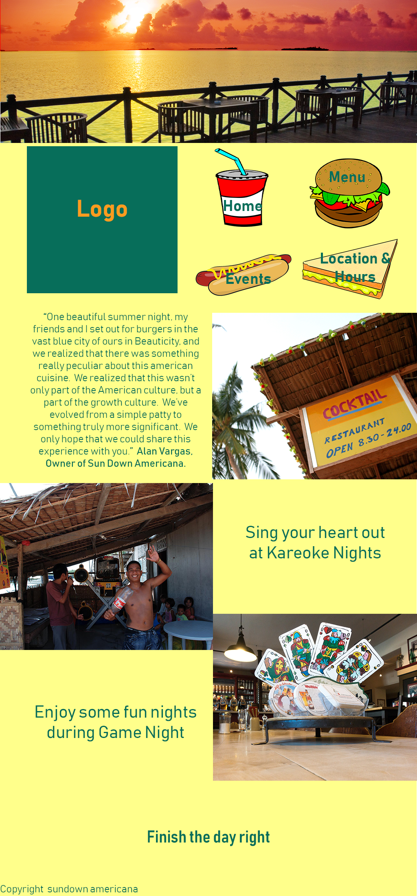

In this style, I wanted to give a strong feeling of being no the beach as part of its promotion and appeal. I want to select images that show both the restaurant and the beach. I also want to show that the restaurant has a lot to offer by promoting different events on the main page. I tried to utilize between 2-3 column space and Wanted to provide a lot of information of what the restaurant offers.
I tried using the color pallete that shows the concepts of sunsets and the beach. The second style focuses more on a cartoonish style but still uses themes of the sunset. It was pretty difficult finding images the relayed the style that I was wanting for the restaurant (flat colors, soft edges). Overall, I want the secondd style to reflect more of an artistic style than reaslistic.